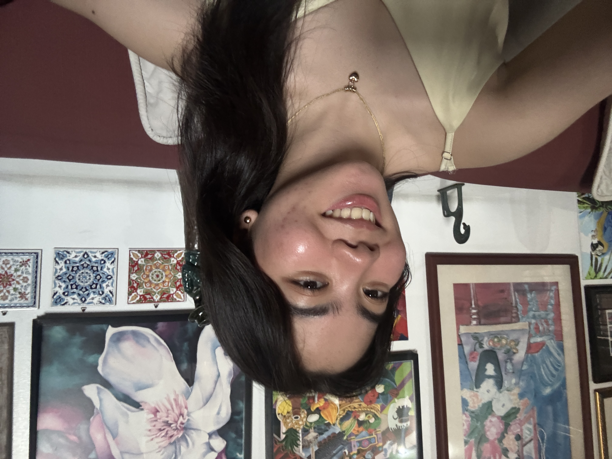

About Us
The Groove Shelf · Music Reviews · Ateneo de Manila University
Apo
mark.ting@student.ateneo.edu

Armand
armand.sotelo@student.ateneo.edu
Jenny
jennylou.batalla@student.ateneo.edu

Pia
sofia.sanmiguel@student.ateneo.edu